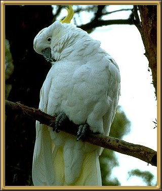

These are very noisy, screechy birds, and probably the most well-known of the Australian birds. They are very gregarious and tend to feed in large flocks, and have one or two "lookout" birds watching for danger in high trees. One screech and the flock lifts in unison flashing their yellow underwings. It is a very beautiful sight. 45-50cm (18-19.5 inches)
Photographer: D Greig